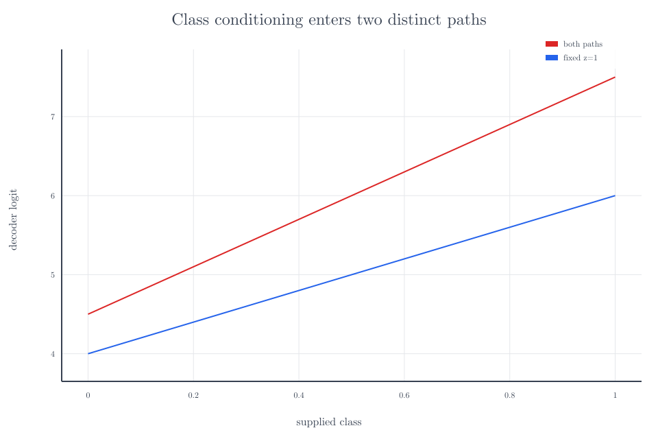
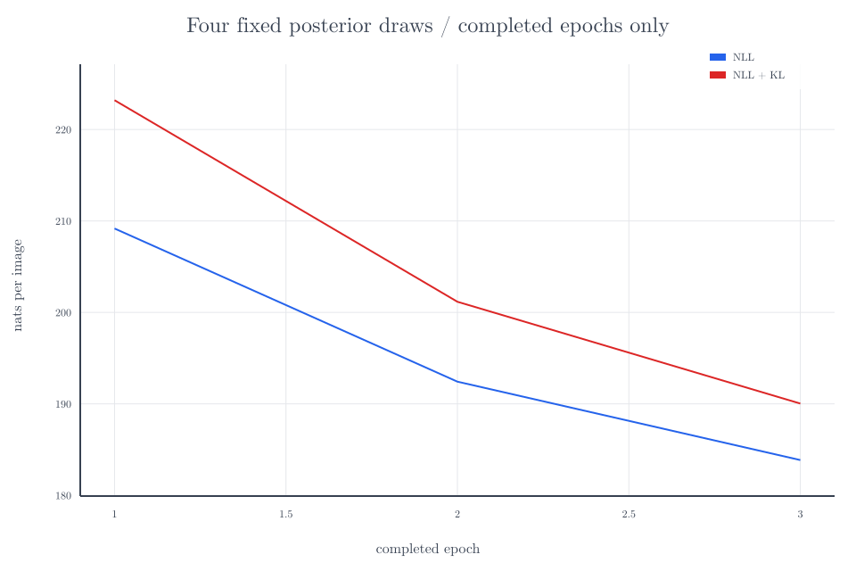
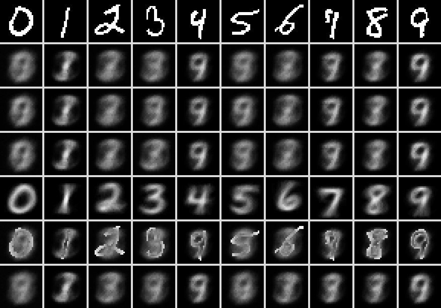
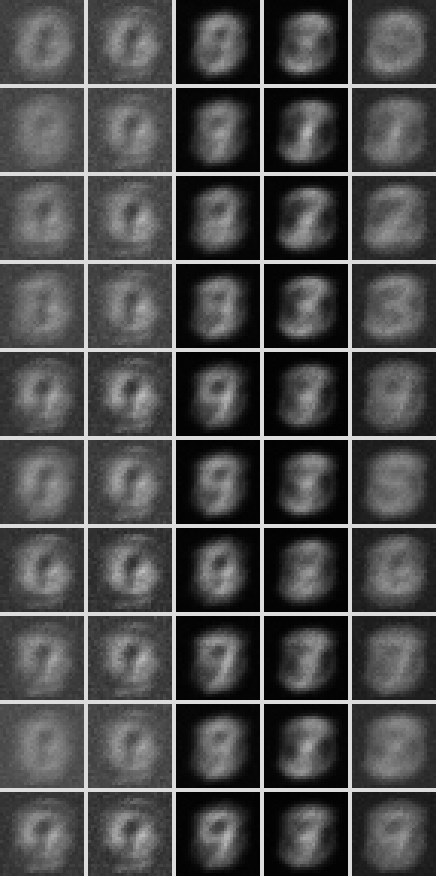
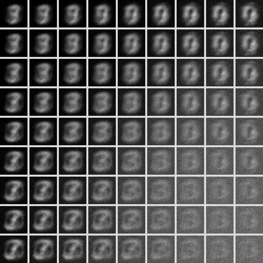

Conditional VAE: A Supplied Class in Both Paths
Abstract
To generate different digit classes from a shared latent space, a model needs the requested class as an input as well as variation within that class. This conditional VAE supplies the same one-hot class to both its Gaussian posterior and its Bernoulli decoder, with explicit posterior noise and a fixed shared standard-normal prior. A hand-checkable example isolates both conditioning paths before the full102,932-parameter model trains for96 Adam updates on statically thresholded MNIST. Four fixed validation draws select epoch3. Heldout negative ELBO is193.80764 nats/image, and decode(mu) pixel MSE is0.07637 versus0.07159 for the stronger fitting class mean. Matched-noise controls, shifted labels, fitting-only means and unfiltered conditional priors expose what the short run learns and loses. The required supplied class is not a predicted label, and the bound is not exact conditional log likelihood.
Conditioning both the posterior and the generator
For binary image x and supplied class c, write h(c) for its one-hot vector. The posterior q_phi(z|x,c)=N(mu(x,c),diag(exp(l(x,c)))) receives concat(x,h(c)). Explicit noise epsilon~N(0,I) gives z=mu+exp(l/2)⊙epsilon. The decoder receives concat(z,h(c)) and returns logits a(z,c); sigmoid(a) gives Bernoulli probabilities. The class is required at inference too. Its path through the posterior is separate from its path through the decoder.
[Kingma and Welling](https://arxiv.org/abs/1312.6114) introduce the Gaussian pathwise estimator; [Sohn and colleagues](https://papers.nips.cc/paper_files/paper/2015/hash/8d55a249e6baa5c06772297520da2051-Abstract.html) develop conditional latent-variable models for structured outputs. This migrated teaching configuration uses digit labels and a *fixed shared* p(z)=N(0,I). It does not reproduce a learned conditional prior or the paper's structured-output benchmark.
By Jensen's inequality,
A single explicit draw gives the training negative-ELBO estimate
Pixels and latent coordinates are summed, not averaged; changing those reductions changes the effective KL weight. There is no annealing, beta tuning or hidden sample in the core forward. One-hot labels are discrete and receive no gradient; image, noise and all parameter paths do. With sigma=exp(l/2), the reconstruction path contributes dL/dmu=dL/dz and dL/dl=0.5(dL/dz)⊙sigma⊙epsilon; analytic KL adds mu/B and0.5(exp(l)−1)/B. The decoder's one-hot suffix has its own learned weights, independent of the encoder's suffix.
#include <dm/dm.hpp>
int main() {
std::filesystem::create_directories("build");
dm::graphics::Diagram d(52, 1150);
dm::graphics::DiagramStroke target;
target.arrow = true;
target.dashed = true;
d.node("x", {0, 0}, "Binary image X\n784 pixels")
.node("q", {6, 0}, "Conditional Gaussian posterior\nconcat(X,one-hot C)")
.node("c", {12, 6}, "Required supplied class C\nSame condition enters both paths")
.node("z", {12, 0}, "Explicit sample\nz = mu + exp(l/2) * epsilon")
.node("e", {12, -3}, "Supplied epsilon ~ N(0,I)\nNo RNG inside the model")
.node("g", {18, 0}, "Conditional Bernoulli decoder\nconcat(z,one-hot C)")
.node("k", {6, -4}, "Analytic KL\nFixed shared N(0,I) prior")
.node("l", {18, -7}, "Mean NLL + KL\nX is the reconstruction target")
.edge("x", "q")
.edge("c", "q")
.edge("c", "g")
.edge("q", "z")
.edge("e", "z")
.edge("z", "g")
.edge("q", "k")
.edge("k", "l")
.edge("g", "l")
.path({{0, -.6}, {0, -7}, {16.1, -7}}, target)
.save_svg("build/cvae_method.svg");
}
A two-class calculation with fourteen learned scalars
Take one zero pixel, one latent coordinate, one ReLU hidden unit and two classes. Set encoder weights to[0,1,2], posterior mean weight1 and log-variance weights/biases0. Then class0 produces mu1 and class1 mu2. With the same epsilon0.5, z is1.5/2.5. Decoder weights [1,3,5] and output weight1 produce logits4.5/7.5. Both KLs are analytic:0.5/2. Holding code fixed at1 instead gives logits4/6, exposing the decoder-only condition effect. All unmentioned weights/biases are zero. This deliberately high-logit toy illustrates the conditioning mechanism, not a useful fit to the zero target.
#include <dm/dm.hpp>
int main() {
namespace n = dm::nn;
const auto t = n::DType::Float64;
n::ParameterStore p(2111, t);
const auto x = n::zeros({2, 1}, t), labels = n::from_vector(std::vector<int>{0, 1}, {2}),
epsilon = n::full({2, 1}, .5, t);
n::models::ConditionalVariationalAutoencoder(p, x, labels, epsilon, 1, 2, 1, 1);
for (const auto& name : p.names())
p.set(name, n::zeros(p.at(name).shape(), t));
p.set("encoder/W", n::tensor({0., 1., 2.}, {3, 1}, t));
p.set("mu/W", n::ones({1, 1}, t));
p.set("decoder/W", n::tensor({1., 3., 5.}, {3, 1}, t));
p.set("output/W", n::ones({1, 1}, t));
const auto o = n::models::ConditionalVariationalAutoencoder(p, x, labels, epsilon, 1, 2, 1, 1);
const auto fixed = n::models::ConditionalVaeDecode(p, n::ones({2, 1}, t), labels, 1, 2, 1, 1);
if (p.count() != 14 || o.mu.to_vector<double>() != std::vector<double>{1, 2} ||
o.z.to_vector<double>() != std::vector<double>{1.5, 2.5} ||
o.logits.to_vector<double>() != std::vector<double>{4.5, 7.5} ||
o.kl.to_vector<double>() != std::vector<double>{.5, 2} ||
fixed.to_vector<double>() != std::vector<double>{4, 6})
return 1;
auto plot = dm::graphics::RPlot::create();
plot.lines({0, 1}, o.logits.to_vector<double>(), "both paths", {220, 38, 38}, 2)
.lines({0, 1}, fixed.to_vector<double>(), "fixed z=1", {37, 99, 235}, 2)
.x_label("supplied class")
.y_label("decoder logit")
.title("Class conditioning enters two distinct paths")
.save_svg("build/cvae_hand.svg");
std::print(
"| supplied class | mu | log variance | z | KL | posterior-path logit | fixed-code logit "
"|\n|---|---:|---:|---:|---:|---:|---:|\n|0|1|0|1.5|0.5|4.5|4|\n|1|2|0|2.5|2|7.5|6|\n");
}| supplied class | mu | log variance | z | KL | posterior-path logit | fixed-code logit |
|---|---|---|---|---|---|---|
| 0 | 1 | 0 | 1.5 | 0.5 | 4.5 | 4 |
| 1 | 2 | 0 | 2.5 | 2 | 7.5 | 6 |

Executed default architecture and parameter census
The default posterior concatenates784 pixels and10 class entries before64ReLU units, then separate two-coordinate linear mean/log-variance heads. The decoder concatenates2 sampled coordinates and the same10 class entries before64ReLU units and784 linear logits. Ten leaves hold102,932 scalars: encoder50,880; mean130; log variance130; decoder832; output50,960.
For tracing only, a787-entry shape probe packs784 pixels, one integer-valued class slot and two epsilon slots; it splits and casts the class back to Int32. The public API takes these as three separate arguments. Both condition concatenations are actual executed tensor endpoints; the graph preserves all class and noise branches. Shared linear drawing scales use a two-pixel visibility floor, six sheets and eight sampled neurons. Parameter counts are unique, even when the shared encoder's dependencies appear beneath both heads.
#include <dm/dm.hpp>
int main() {
namespace n = dm::nn;
n::ParameterStore p(2111);
n::Module model(
[&](const n::Tensor& packed) {
auto x = n::slice_axis(packed, 1, 0, 784),
labels = n::cast(n::reshape(n::slice_axis(packed, 1, 784, 785), {1}), n::DType::Int32),
epsilon = n::slice_axis(packed, 1, 785, 787);
n::model_stage("Image rows", packed, x);
n::model_stage("Required supplied class", packed, labels);
n::model_stage("Supplied Gaussian epsilon", packed, epsilon);
const auto o = n::models::ConditionalVariationalAutoencoder(p, x, labels, epsilon);
n::model_stage("One-hot condition", labels, o.condition);
n::model_stage(
"Encoder image + condition", std::vector<n::Tensor>{x, o.condition}, o.encoder_input);
n::model_stage("Posterior mean", o.encoder_input, o.mu);
n::model_stage("Posterior log variance", o.encoder_input, o.log_variance);
n::model_stage(
"Gaussian pathwise sample", std::vector<n::Tensor>{o.mu, o.log_variance, epsilon}, o.z);
n::model_stage(
"Decoder sample + condition",
std::vector<n::Tensor>{o.z, o.condition},
o.decoder_input);
n::model_stage("Conditional Bernoulli logits", o.decoder_input, o.logits);
n::model_stage(
"Summed pixel NLL", std::vector<n::Tensor>{x, o.logits}, o.reconstruction_nll);
n::model_stage("Summed Gaussian KL", std::vector<n::Tensor>{o.mu, o.log_variance}, o.kl);
n::model_stage("Mean NLL + KL", std::vector<n::Tensor>{o.reconstruction_nll, o.kl}, o.loss);
return o.loss;
},
"Conditional VAE / supplied class in both paths");
n::ModelPlotOptions o;
o.style = n::ModelPlotStyle::Graph;
o.detail = n::ModelPlotDetail::Blocks;
o.max_neurons = 8;
o.sizing.spatial_scale = n::ModelPlotScale::Linear;
o.sizing.channel_scale = n::ModelPlotScale::Linear;
o.sizing.minimum_extent = 2;
o.sizing.max_planes = 6;
const auto figure = model.plot(n::zeros({1, 787}), o);
if (p.count() != 102932 || p.size() != 10 || figure.parameter_count() != 102932)
return 1;
figure.save_svg("build/cvae_architecture.svg");
std::print("{} leaves /{} unique learned scalars.\n", p.size(), p.count());
}10 leaves /102932 unique learned scalars.

Original MNIST, statically thresholded at byte128
Native preparation acquires checked original MNIST and creates disjoint balanced pools of 1,000 fitting,200 validation and200 official test images. LoadSaliency checks geometry, byte range, labels, unique pixels, split IDs and100/20/20 observations per digit. Fitting and validation IDs are from0–59,999; official test IDs are offset into60,000–69,999. Provenance and the independent seeded row selection are retained in manifest.json. Normalized Float32 pixels are thresholded at0.5, equivalent to original byte≥128. Both originals and binary pixels are saved, with their labels and source IDs. This is static thresholding, not the official binarized-MNIST benchmark or random per-epoch Bernoulli binarization.
#include <dm/dm.hpp>
int main() {
namespace n = dm::nn;
std::filesystem::create_directories("build/cvae");
const std::filesystem::path cache = dm::datasets::data_home();
dm::datasets::prepare_example_data("mnist-assets", cache.string());
const auto pools = n::models::LoadSaliency(cache / "saliency");
n::NamedTensors saved;
for (int k = 0; k < 3; ++k) {
const std::string split = k == 0 ? "fit" : k == 1 ? "validation" : "test";
const auto& d = pools[k];
saved.emplace_back(split + "_original_images", d.images);
saved.emplace_back(
split + "_images", n::cast(n::greater_equal(d.images, .5), n::DType::Float32));
saved.emplace_back(split + "_source_ids", d.source);
saved.emplace_back(split + "_labels", d.labels);
}
n::save_npz("build/cvae/data.npz", saved);
std::filesystem::copy_file(
cache / "saliency/manifest.json",
"build/cvae/data_manifest.json",
std::filesystem::copy_options::overwrite_existing);
std::print(
"| split | binary images | each supplied digit "
"|\n|---|---:|---:|\n|fit|1000|100|\n|validation|200|20|\n|official test|200|20|\n");
}| split | binary images | each supplied digit |
|---|---|---|
| fit | 1000 | 100 |
| validation | 200 | 20 |
| official test | 200 | 20 |
Ninety-six explicit Adam updates and fixed four-draw validation
Seed2111 initializes ordinary Glorot weights and zero biases. Adam uses learning rate0.003, moments0.9/0.999 and epsilon1e-8. BatchOrder(1000,32,2113) visits all fitting rows each epoch: 31 full batches and a final batch of8,32 updates/epoch,96 over three epochs. Training uses one fresh Gaussian noise vector per image per epoch, seeds2130/2131/2132. Fixed four-draw banks use fit2141, validation2131 and test2137; the generator restarts for each named bank. The training-epoch2/validation seed reuse is retained from the source, so those banks are not independent streams. Each is explicit, archived and held fixed in its stated role; training targets and validation targets remain disjoint. A draw stream is MT19937/Box–Muller Float64, with its Float32 cast supplied to the model. Prior-only sampling later uses seed2143.
The loop shows every forward/gradient/optimizer step. Completed epochs1–3 are candidates; epoch-zero test score is a control only. Four fixed validation draws average summed Bernoulli NLL over samples and images; analytic KL is counted once per image. Float64 metric accumulation iterates sample then image over Float32 per-row outputs, preserving the original criterion. *Validation NLL+KL* selects all ten parameter tensors together. Test pixels and all gallery controls play no role in checkpoint selection. This is a four-sample Monte Carlo ELBO estimate, not an importance-weighted bound or exact conditional log likelihood.
#include <dm/dm.hpp>
namespace nn = dm::nn;
struct NoiseBank {
nn::Tensor standard, epsilon;
};
void Require(bool ok, const std::string& why) {
if (!ok)
throw std::runtime_error(why);
}
void Near(double a, double b, double tolerance, const std::string& why) {
Require(std::abs(a - b) <= tolerance, why);
}
nn::Tensor Flatten(const nn::Tensor& t) {
return nn::reshape(t, {t.size(0), 784});
}
nn::Tensor Find(const nn::NamedTensors& a, const std::string& key) {
for (const auto& [k, v] : a)
if (k == key)
return v;
throw std::runtime_error(key);
}
std::vector<float> Bytes(const nn::Tensor& t) {
return t.contiguous().to_vector<float>();
}
auto Snapshot(const nn::ParameterStore& p) {
return p.flatten();
}
nn::NamedTensors Arrays(const nn::ParameterStore& p) {
nn::NamedTensors a;
for (const auto& k : p.names())
a.emplace_back(k, p.at(k).detach().clone());
return a;
}
nn::NamedTensors CheckGradients(
const nn::ParameterStore& p,
const std::vector<nn::Tensor>& gs,
const std::string&,
const std::string&) {
nn::NamedTensors a;
Require(gs.size() == p.size(), "all10 gradients");
const auto names = p.names();
for (std::size_t i = 0; i < gs.size(); ++i) {
double norm = 0;
for (double x : gs[i].to_vector<double>()) {
Require(std::isfinite(x), "finite derivative");
norm += x * x;
}
Require(norm > 0, "nonzero derivative in each tensor");
a.emplace_back(names[i], gs[i]);
}
return a;
}
NoiseBank VaeNoise(std::int64_t n, std::int64_t samples, std::uint32_t seed) {
const auto s = nn::models::GaussianNoise({n, 2}, samples, seed);
return {s, nn::cast(s, nn::DType::Float32)};
}
nn::Tensor VaeNoiseAt(const NoiseBank& bank, int k) {
return nn::select(bank.epsilon, 0, k).contiguous();
}
std::vector<nn::Tensor> Evaluate(
nn::ParameterStore& p,
const nn::Tensor& images,
const nn::Tensor& classes,
const nn::Tensor& epsilon) {
nn::NoGradGuard guard;
const auto o =
nn::models::ConditionalVariationalAutoencoder(p, Flatten(images), classes, epsilon);
return {o.mu, o.log_variance, o.z, o.probability, o.reconstruction_nll, o.kl, o.loss};
}
nn::Tensor Decode(nn::ParameterStore& p, const nn::Tensor& z, const nn::Tensor& classes) {
nn::NoGradGuard guard;
return nn::sigmoid(nn::models::ConditionalVaeDecode(p, z, classes));
}
std::vector<nn::Tensor> Probe(
nn::ParameterStore& p,
const nn::Tensor& images,
const nn::Tensor& classes,
const nn::Tensor& epsilon) {
nn::NoGradGuard guard;
const auto o =
nn::models::ConditionalVariationalAutoencoder(p, Flatten(images), classes, epsilon);
return {o.condition, o.encoder_input, o.decoder_input, o.z};
}
std::array<double, 3> ConditionalVaeScore(
nn::ParameterStore& p,
const nn::Tensor& images,
const nn::Tensor& classes,
const NoiseBank& bank) {
double reconstruction = 0, kl = 0;
const auto n = images.size(0), samples = bank.epsilon.size(0);
for (int k = 0; k < samples; ++k) {
const auto o = Evaluate(p, images, classes, VaeNoiseAt(bank, k));
const auto nll = o[4].to_vector<float>(), kls = o[5].to_vector<float>();
for (int b = 0; b < n; ++b) {
reconstruction += nll[b];
if (k == 0)
kl += kls[b];
}
}
reconstruction /= double(n * samples);
kl /= double(n);
return {reconstruction, kl, reconstruction + kl};
}
double MaxAbsDiff(const nn::Tensor& a, const nn::Tensor& b, int n) {
const auto x = Bytes(a), y = Bytes(b);
double d = 0;
for (int i = 0; i < n; ++i)
d = std::max(d, std::abs(double(x[i]) - y[i]));
return d;
}
double Mse(const nn::Tensor& a, const nn::Tensor& b) {
return nn::mean(
nn::square(
nn::cast(Flatten(a), nn::DType::Float64) -
nn::cast(Flatten(b), nn::DType::Float64)))
.item();
}
int main() {
const std::filesystem::path root = "build/cvae";
const int epochs = 3;
const auto data = nn::load_npz((root / "data.npz").string());
std::vector<nn::models::SaliencyData> pools;
for (const std::string split : {"fit", "validation", "test"})
pools.push_back(
{Find(data, split + "_images"),
Find(data, split + "_labels"),
Find(data, split + "_source_ids")});
auto val_noise = VaeNoise(200, 4, 2131), test_noise = VaeNoise(200, 4, 2137),
fit_noise = VaeNoise(1000, 4, 2141);
nn::save_npz(
(root / "fixed_noise.npz").string(),
{{"validation_standard", val_noise.standard},
{"validation_epsilon", val_noise.epsilon},
{"test_standard", test_noise.standard},
{"test_epsilon", test_noise.epsilon},
{"fit_standard", fit_noise.standard},
{"fit_epsilon", fit_noise.epsilon}});
nn::ParameterStore model(2111);
{
nn::NoGradGuard guard;
nn::models::ConditionalVariationalAutoencoder(
model, nn::zeros({1, 784}), nn::zeros({1}, nn::DType::Int32), nn::zeros({1, 2}));
}
nn::OptimizerConfig config;
config.kind = nn::OptimizerKind::Adam;
nn::Optimizer optimizer(model, .003, config);
Require(
model.size() == 10 && model.count() == 102932, "twohead diagonalGaussian parameter census");
nn::save_npz((root / "initial_arrays.npz").string(), Arrays(model));
auto initial = ConditionalVaeScore(model, pools[2].images, pools[2].labels, test_noise);
nn::BatchOrder order(1000, 32, 2113);
std::ofstream history(root / "history.tsv"), batches(root / "batches.tsv");
history.precision(17);
history << "epoch\tfit_preupdate_negative_elbo\tvalidation_reconstruction_nll\tvalidation_"
"kl\tvalidation_"
"negative_elbo\n";
batches << "epoch\tstep\trow\tsource_id\n";
const auto fit_source = pools[0].source.to_vector<int>();
const auto best_path = (root / "best.npz").string();
double best = std::numeric_limits<double>::infinity();
int selected = 0, step = 0;
const auto started = std::chrono::steady_clock::now();
for (int epoch = 1; epoch <= epochs; ++epoch) {
auto noise = VaeNoise(1000, 1, 2129 + epoch);
nn::save_npz(
(root / ("train_noise_epoch" + std::to_string(epoch) + ".npz")).string(),
{{"standard", noise.standard}, {"epsilon", noise.epsilon}});
auto epsilon = VaeNoiseAt(noise, 0);
order.begin_epoch();
double sum = 0;
int seen = 0;
for (;;) {
auto rows = order.next();
if (rows.empty())
break;
auto input = nn::take_rows(pools[0].images, rows), e = nn::take_rows(epsilon, rows),
classes = nn::take_rows(pools[0].labels, rows);
if (step == 0) {
auto g = CheckGradients(
model,
nn::grad(
nn::models::ConditionalVariationalAutoencoder(model, Flatten(input), classes, e)
.loss,
model.parameters()),
"all posterior/decoder negativeELBO derivatives finite",
"ALL10posterior/decoder tensors receive gradients");
nn::save_npz((root / "first_gradients.npz").string(), g);
nn::save_npz(
(root / "first_batch.npz").string(),
{{"images", input}, {"labels", classes}, {"epsilon", e}});
}
const auto out =
nn::models::ConditionalVariationalAutoencoder(model, Flatten(input), classes, e);
sum += double(rows.size()) * out.loss.item<float>();
const auto gradients = nn::grad(out.loss, model.parameters());
optimizer.step(gradients);
seen += int(rows.size());
for (auto row : rows)
batches << epoch << '\t' << step << '\t' << row << '\t' << fit_source[row] << '\n';
if (step == 0)
nn::save_npz((root / "first_update_arrays.npz").string(), Arrays(model));
++step;
}
Require(seen == 1000, "allfittingrecords once per epoch");
auto score = ConditionalVaeScore(model, pools[1].images, pools[1].labels, val_noise);
history << epoch << '\t' << sum / seen << '\t' << score[0] << '\t' << score[1] << '\t'
<< score[2] << '\n';
nn::save_npz(
(root / ("epoch" + std::to_string(epoch) + "_arrays.npz")).string(), Arrays(model));
if (score[2] < best) {
best = score[2];
selected = epoch;
model.save(best_path); // fixed FOUR-sample validation negative ELBO selects epoch
}
std::cout << "VAE epoch" << epoch << ":validation NLL=" << score[0] << ",KL=" << score[1]
<< ",negativeELBO=" << score[2] << std::endl;
}
const double seconds =
std::chrono::duration<double>(std::chrono::steady_clock::now() - started).count();
nn::ParameterStore deployed(2111);
{
nn::NoGradGuard guard;
nn::models::ConditionalVariationalAutoencoder(
deployed, nn::zeros({1, 784}), nn::zeros({1}, nn::DType::Int32), nn::zeros({1, 2}));
}
deployed.load(best_path);
const auto before = Snapshot(deployed);
Near(
ConditionalVaeScore(deployed, pools[1].images, pools[1].labels, val_noise)[2],
best,
1e-8,
"fresh selected MC validation objective");
nn::NamedTensors output;
std::vector<NoiseBank> banks{fit_noise, val_noise, test_noise};
for (int split = 0; split < 3; ++split) {
const std::string name = split == 0 ? "fit" : split == 1 ? "validation" : "test";
const std::int64_t n = pools[split].images.size(0);
auto mean = Evaluate(deployed, pools[split].images, pools[split].labels, nn::zeros({n, 2}));
Require(Bytes(mean[2]) == Bytes(mean[0]), "epsilon0 means z=mu EXACT");
std::vector<nn::Tensor> sample_z, prediction, nll;
for (int k = 0; k < 4; ++k) {
auto draw =
Evaluate(deployed, pools[split].images, pools[split].labels, VaeNoiseAt(banks[split], k));
Require(
Bytes(draw[0]) == Bytes(mean[0]) && Bytes(draw[1]) == Bytes(mean[1]),
"epsilon changes samples not posterior parameters");
sample_z.push_back(draw[2]);
prediction.push_back(draw[3]);
nll.push_back(draw[4]);
}
output.emplace_back(name + "_mu", mean[0]);
output.emplace_back(name + "_log_variance", mean[1]);
output.emplace_back(name + "_mean_reconstruction", mean[3]);
output.emplace_back(name + "_kl", mean[5]);
output.emplace_back(name + "_sample_z", nn::stack(sample_z, 0));
output.emplace_back(name + "_sample_prediction", nn::stack(prediction, 0));
output.emplace_back(name + "_sample_nll", nn::stack(nll, 0));
}
const auto& test_images = pools[2].images;
const auto& test_labels = pools[2].labels;
auto test = Evaluate(deployed, test_images, test_labels, VaeNoiseAt(test_noise, 0)),
repeat = Evaluate(deployed, test_images, test_labels, VaeNoiseAt(test_noise, 0));
Require(
Bytes(test[2]) == Bytes(repeat[2]) && Bytes(test[3]) == Bytes(repeat[3]) &&
Bytes(Decode(deployed, test[2], test_labels)) == Bytes(test[3]),
"fixed epsilon repeatability and target-free exact sampled decode");
auto other = Evaluate(deployed, test_images, test_labels, VaeNoiseAt(test_noise, 1));
Require(
Bytes(test[2]) != Bytes(other[2]) && Bytes(test[3]) != Bytes(other[3]),
"second epsilon changes latent samples AND decoder probabilities");
auto first = nn::models::SaliencyRows(pools[2], {0});
auto single =
Evaluate(deployed, first.images, first.labels, nn::take_rows(VaeNoiseAt(test_noise, 0), {0}));
const double parity = MaxAbsDiff(single[3], test[3], 784);
Require(parity < 2e-6, "posterior single/batch parity");
output.emplace_back("zero_latent_prediction", Decode(deployed, nn::zeros({200, 2}), test_labels));
std::vector<int> shifted;
for (int c : test_labels.to_vector<int>())
shifted.push_back((c + 1) % 10);
auto shifted_labels = nn::from_vector(shifted, {200});
auto wrong_mean = Decode(deployed, Find(output, "test_mu"), shifted_labels);
auto wrong_sample = Decode(deployed, test[2], shifted_labels);
output.emplace_back("wrong_label_mean_prediction", wrong_mean);
output.emplace_back("wrong_label_sample_prediction", wrong_sample);
output.emplace_back("wrong_labels", shifted_labels);
auto changed_posterior =
Evaluate(deployed, test_images, shifted_labels, VaeNoiseAt(test_noise, 0));
const double posterior_change = MaxAbsDiff(test[0], changed_posterior[0], 400);
Require(
posterior_change > 1e-5,
"supplied class also affects posterior,not decoder-only conditioning");
output.emplace_back("wrong_label_mu", changed_posterior[0]);
output.emplace_back("wrong_label_log_variance", changed_posterior[1]);
auto prior_noise = VaeNoise(5, 1, 2143);
auto base_z = VaeNoiseAt(prior_noise, 0);
const auto base = base_z.to_vector<float>();
std::vector<float> pz(100);
std::vector<int> pl(50);
for (int c = 0; c < 10; ++c)
for (int k = 0; k < 5; ++k) {
pl[c * 5 + k] = c;
for (int d = 0; d < 2; ++d)
pz[(c * 5 + k) * 2 + d] = base[k * 2 + d];
}
auto prior_z = nn::from_vector(pz, {50, 2}), prior_labels = nn::from_vector(pl, {50});
auto prior = Decode(deployed, prior_z, prior_labels);
const auto pv = prior.to_vector<float>();
double condition_change = 0;
for (int c = 1; c < 10; ++c)
for (int k = 0; k < 5 * 784; ++k)
condition_change = std::max(condition_change, std::abs(double(pv[c * 5 * 784 + k]) - pv[k]));
Require(
condition_change > 1e-5,
"same prior z changes probabilities when ONLY supplied class changes");
std::vector<float> gz(162);
for (int row = 0; row < 9; ++row)
for (int col = 0; col < 9; ++col) {
gz[(row * 9 + col) * 2] = -2.f + .5f * col;
gz[(row * 9 + col) * 2 + 1] = 2.f - .5f * row;
}
auto grid_z = nn::from_vector(gz, {81, 2}),
grid_labels = nn::from_vector(std::vector<int>(81, 3), {81});
auto grid = Decode(deployed, grid_z, grid_labels);
nn::save_npz(
(root / "prior.npz").string(),
{{"standard", prior_noise.standard},
{"base_z", base_z},
{"z", prior_z},
{"labels", prior_labels},
{"probability", prior},
{"grid_z", grid_z},
{"grid_labels", grid_labels},
{"grid_probability", grid}});
auto probe_rows = nn::models::SaliencyRows(pools[2], {0, 1, 2, 3, 4, 5, 6, 7});
auto probe_epsilon = nn::take_rows(VaeNoiseAt(test_noise, 0), {0, 1, 2, 3, 4, 5, 6, 7});
auto probe = Probe(deployed, probe_rows.images, probe_rows.labels, probe_epsilon);
{
const auto lab = probe_rows.labels.to_vector<int>();
const auto img = probe_rows.images.contiguous().to_vector<float>();
const auto oh = probe[0].to_vector<float>(), enc = probe[1].to_vector<float>(),
dec = probe[2].to_vector<float>(), zz = probe[3].to_vector<float>();
for (int b = 0; b < 8; ++b) {
for (int c = 0; c < 10; ++c) {
const float expected = lab[b] == c ? 1.f : 0.f;
Near(oh[b * 10 + c], expected, 0, "actual onehot");
Near(enc[b * 794 + 784 + c], expected, 0, "encoder receives exact same condition");
Near(dec[b * 12 + 2 + c], expected, 0, "decoder receives exact same condition");
}
for (int i = 0; i < 784; ++i)
Near(enc[b * 794 + i], img[b * 784 + i], 0, "encoder concat image prefix exact");
for (int i = 0; i < 2; ++i)
Near(dec[b * 12 + i], zz[b * 2 + i], 0, "decoder concat sampled z prefix exact");
}
}
nn::save_npz(
(root / "condition_probe.npz").string(),
{{"images", probe_rows.images},
{"labels", probe_rows.labels},
{"epsilon", probe_epsilon},
{"one_hot", probe[0]},
{"encoder_input", probe[1]},
{"decoder_input", probe[2]},
{"z", probe[3]}});
for (int invalid : {-1, 10}) {
bool rejected = false;
try {
Decode(deployed, nn::zeros({1, 2}), nn::from_vector(std::vector<int>{invalid}, {1}));
} catch (const std::exception&) {
rejected = true;
}
Require(rejected, "invalid supplied class rejected before graph execution");
}
Require(
before == Snapshot(deployed),
"conditional posterior/prior/controls leave ALL10parameters immutable");
nn::save_npz((root / "outputs.npz").string(), output);
nn::save_npz((root / "model_arrays.npz").string(), Arrays(deployed));
auto score = ConditionalVaeScore(deployed, test_images, test_labels, test_noise);
const auto mean_rec = Find(output, "test_mean_reconstruction");
const double mean_mse = Mse(mean_rec, test_images);
const auto fit = nn::cast(Flatten(pools[0].images), nn::DType::Float64),
hot = nn::one_hot(pools[0].labels, 10, 1, 0, nn::DType::Float64);
const auto class_means = nn::cast(nn::matmul(nn::transpose(hot), fit) / 100, nn::DType::Float32);
const auto class_mean = nn::take_rows(class_means, test_labels.to_vector<std::int64_t>());
nn::save_npz((root / "class_mean.npz").string(), {{"test_class_mean", class_mean}});
const auto global_mean =
nn::tile(nn::cast(nn::mean(fit, {0}, true), nn::DType::Float32), {200, 1});
std::print(
"| quantity | heldout value |\n|---|---:|\n| selected epoch |{}|\n| NLL nats/image "
"|{:.9f}|\n| KL nats/image |{:.9f}|\n| negative ELBO |{:.9f}|\n| decode(mu) pixel MSE "
"|{:.9f}|\n| fitting global mean MSE |{:.9f}|\n| fitting class mean MSE |{:.9f}|\n| "
"shifted-label same-mu MSE |{:.9f}|\n| posterior class-change max |{:.9f}|\n| fixed-prior "
"class-change max |{:.9f}|\n",
selected,
score[0],
score[1],
score[2],
mean_mse,
Mse(global_mean, test_images),
Mse(class_mean, test_images),
Mse(wrong_mean, test_images),
posterior_change,
condition_change);
Require(step == 96 && optimizer.iterations() == 96, "original96 updates");
Require(bool(history) && bool(batches), "complete history/batch evidence");
}VAE epoch1:validation NLL=209.173,KL=14.0278,negativeELBO=223.201 VAE epoch2:validation NLL=192.427,KL=8.73698,negativeELBO=201.164 VAE epoch3:validation NLL=183.854,KL=6.17753,negativeELBO=190.032
| quantity | heldout value |
|---|---|
| selected epoch | 3 |
| NLL nats/image | 187.190331783 |
| KL nats/image | 6.617312528 |
| negative ELBO | 193.807644311 |
| decode(mu) pixel MSE | 0.076372894 |
| fitting global mean MSE | 0.086689513 |
| fitting class mean MSE | 0.071591939 |
| shifted-label same-mu MSE | 0.081708886 |
| posterior class-change max | 0.421315193 |
| fixed-prior class-change max | 0.239766419 |
Heldout results and reconstruction controls
The selected epoch3 test reconstruction NLL is187.190332 nats/image, KL6.617313 and negative ELBO193.807644. Decode(mu) MSE is0.076372894; decoding that *same mu* with class(c+1) mod10 worsens it to0.081708886. Changing the supplied class also changes the posterior mean (max0.421315), so conditioning is not confined to the decoder. At the same prior code, changing only the class changes probabilities by up to0.239766. These differences demonstrate active condition paths, not that every generated image is recognizable.
The fit-global and fit-class means are estimated from binary fitting pixels only. Class means use100 observations per class and the same supplied test label as the conditional decoder; this is an appropriate condition-aware baseline rather than a label prediction task. The global mean MSE is0.086689513, while the fitting class mean MSE is0.071591939: the class mean outperforms this short-trained model. Decode(mu) is not the posterior predictive mean. Four sampled outputs per split are saved separately; sigmoid outputs are probabilities, not Bernoulli pixel samples. Loss values alone do not establish likelihood superiority, disentanglement, preserved identity or compression bitrate.
#include <dm/dm.hpp>
int main() {
std::ifstream f("build/cvae/history.tsv");
std::string line;
std::getline(f, line);
std::vector<double> epochs, nll, kl, objective;
while (std::getline(f, line)) {
std::istringstream r(line);
double e, train, a, b, c;
r >> e >> train >> a >> b >> c;
epochs.push_back(e);
nll.push_back(a);
kl.push_back(b);
objective.push_back(c);
}
auto p = dm::graphics::RPlot::create();
p.lines(epochs, nll, "NLL", {37, 99, 235}, 2)
.lines(epochs, objective, "NLL + KL", {220, 38, 38}, 2)
.title("Four fixed posterior draws / completed epochs only")
.x_label("completed epoch")
.y_label("nats per image")
.save_svg("build/cvae_learning.svg");
}
The gallery takes the first heldout record of each supplied digit0–9, without quality filtering. Rows: binary input, decode(mu), posterior draw0 probabilities, draw1 probabilities, fitting-only class mean, absolute decode(mu) error and shifted-label decode of the *same mu*. Fixed[0,1] gray, nearest scale3, gap4; errors are not amplified. Source IDs remain available with every label in data.npz. Short training and only two latents blur or lose details.
#include <dm/dm.hpp>
int main() {
namespace n = dm::nn;
auto load = [](const std::string& file) {
std::map<std::string, n::Tensor> a;
for (const auto& [k, v] : n::load_npz("build/cvae/" + file + ".npz"))
a.emplace(k, v);
return a;
};
auto d = load("data"), o = load("outputs"), c = load("class_mean");
std::vector<std::int64_t> rows;
const auto labels = d.at("test_labels").to_vector<int>();
for (int digit = 0; digit < 10; ++digit) {
const auto found = std::find(labels.begin(), labels.end(), digit);
if (found == labels.end())
return 1;
rows.push_back(found - labels.begin());
}
const auto binary = n::reshape(d.at("test_images"), {200, 784}),
mean = o.at("test_mean_reconstruction"), samples = o.at("test_sample_prediction");
std::vector<n::Tensor> panels;
for (const auto& t :
{binary,
mean,
n::select(samples, 0, 0),
n::select(samples, 0, 1),
c.at("test_class_mean"),
n::abs(mean - binary),
o.at("wrong_label_mean_prediction")})
panels.push_back(n::take_rows(t, rows));
n::save_image_grid(
n::reshape(n::concat(panels, 0), {70, 28, 28, 1}),
"build/cvae_reconstructions.png",
10,
0,
1,
4,
220. / 255,
3);
}
Same prior codes across all supplied classes
Each class row uses exactly the same five standard-normal two-coordinate codes, seed2143. Rows0–9 change only the supplied decoder class. There is no image or posterior input and no learned class-specific prior. All fifty sigmoid decoder probabilities are shown; none is selected for quality or rescaled per image.
#include <dm/dm.hpp>
int main() {
namespace n = dm::nn;
for (const auto& [key, v] : n::load_npz("build/cvae/prior.npz"))
if (key == "probability")
n::save_image_grid(
n::reshape(v, {50, 28, 28, 1}), "build/cvae_prior.png", 5, 0, 1, 4, 220. / 255, 3);
}
A fixed two-dimensional latent grid for class3
The complete81-point grid holds class3 fixed, varies z_x from−2 to2 left to right and z_y from2 to−2 top to bottom, step0.5. It is a decoder inspection, not a plot of learned data coordinates or evidence of semantic axis separation. The shared fixed gray range makes weak and saturated outputs visible.
#include <dm/dm.hpp>
int main() {
namespace n = dm::nn;
for (const auto& [key, v] : n::load_npz("build/cvae/prior.npz"))
if (key == "grid_probability")
n::save_image_grid(
n::reshape(v, {81, 28, 28, 1}), "build/cvae_latent_grid.png", 9, 0, 1, 4, 220. / 255, 2);
}
Canonical API and reproducible evidence
models::ConditionalVariationalAutoencoder and ConditionalVaeDecode provide reusable native forwards; the owning ConditionalVaeOutput includes condition, encoder_input and decoder_input alongside Gaussian endpoints and losses. GaussianReparameterize, DiagonalGaussianKl and BernoulliPixelNll supply the shared mathematics. Python/R bindings call these same operations; this report's complete C++ training loop owns all96 updates and validation selection.
Every array of all18 original archives, exact batch TSV and complete validation history is compared with the saved source run. Evidence includes initial/first-update/all-epoch/selected weights, all102,932 first derivatives, original and binary data, explicit noise banks, all posterior samples, standalone decoder controls, condition concatenations, class means and unfiltered prior/grid probabilities. Independent NumPy checks the chain rule and complete forward outputs. Repeated fixed noise, epsilon-zero means, changed-noise behavior, invalid labels, restored checkpoint parity, single/batch agreement and immutable inference execute inside the report. Numerical checks support this finite run; they do not establish convergence or make the supplied class into a predicted label.